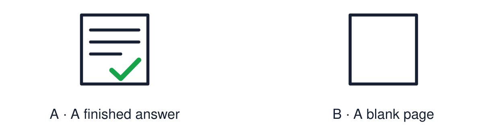

Arrival choices
Previous lesson reminder:

Start with 1 and 2. Try 3 and 4 when ready. Reading and exact scribing are available.
1 Which words show that an answer is comparing?
Support: Use the reminder strip or talk it through with an adult.
2 Which meaning fits belief?
Support: Choose: Something a person holds to be true OR Something people do as part of their beliefs.
3 What is the difference between a belief and a practice?
Support: Use the model evidence anchor B or read one relevant card together.
4 May a pupil use a reader or scribe in the assessment?
Support: Give a reason when ready.
Stretch: use a precise example or explain which detail supports your answer.
Evidence cards
Read, point or listen. Keep the source label with any detail you use.
A The assessment question
“Choose one practice. Explain what it shows about belief, and compare it with a practice from a second worldview.”
Source: Authored assessment task
Limit: Use evidence from this half-term.
B Belief, practice, meaning
Practice: what is done. Belief: what is held to be true. Meaning: why the practice matters to the person.
Source: Authored classroom resource
Limit: Some examples fit more than one heading.
C Evidence bank
Salah · the Lord’s Prayer · reflection · Hajj · Lourdes · Bar/Bat Mitzvah · confirmation · naming ceremony · the Golden Rule · the two life-question sources.
Source: Authored classroom resource
Limit: Choose what you can explain.
D Routes
Written · structured frame · supported response with reader, scribe or recorder.
Source: Authored classroom resource
Limit: Use your agreed access arrangements.
Evidence cards continued
Read, point or listen. Keep the source label with any detail you use.
E1 Assessment source Salah
Muslims offer salah five times a day facing Makkah, after washing (wudu). Purposes include obedience to God, gratitude and staying mindful of God through the day.
Source: Authored RE summary
Limit: Belief and practice vary between individuals and communities.
E2 Assessment source Non-religious reflection
Many non-religious people use quiet reflection, mindfulness or time in nature to think about their lives and values. It is not addressed to a god.
Source: Authored RE summary
Limit: Some non-religious people do none of these.
Shared investigation
1. Match each example to belief, practice or meaning.
2. Complete one practice-meaning question together.
Work with a partner or adult, or use your own table. One person suggests; the other checks the evidence. Swap after one turn. Passing is allowed.
Move or match the cards
| Cards to use |
|---|
| White clothing shows that equality |
| All are equal before God |
| Circling the Ka‘bah |
Possible labels: Belief / Meaning / Practice
Support: Use the glossary and one chunk of evidence. Plan the claim and supporting detail before explaining.
Further challenge: Evaluate which practice shows belief most clearly, with a reason.
Supported independent task
Complete this route only. Use evidence to show understanding of beliefs, practices and their meanings across two worldviews.
1. Choose one practice from the evidence bank.
2. Match it to its belief and its meaning.
3. Say one way it is like another practice.
Support: Use the glossary and one chunk of evidence. Plan the claim and supporting detail before explaining. Complete the organiser one space at a time. The practice of ___ shows the belief that ___. Both ___. However, ___.
An adult may read or scribe your exact response. They should not choose the answer.
Standard independent task
Complete this route only. Use evidence to show understanding of beliefs, practices and their meanings across two worldviews.
1. Explain one practice and the belief it shows.
2. Compare it with a practice from a second worldview.
3. Use both and however.
Support: The practice of ___ shows the belief that ___. Both ___. However, ___.
Check the required evidence and revise one detail.
Stretch independent task
Complete this route only. Use evidence to show understanding of beliefs, practices and their meanings across two worldviews.
1. Explain and compare two practices with evidence.
2. Explain the beliefs behind the difference.
3. Record one thing understood well and one area to revisit.
Support: Choose the evidence independently. Use the frame only if it helps.
Evaluate which practice shows belief most clearly, with a reason.
Exit ticket
Choose a response mode. You may give your answers privately to an adult.
What is the difference between a belief and a practice?
May a pupil use a reader or scribe in the assessment?
Support: The practice of ___ shows the belief that ___. Both ___. However, ___.
Further challenge: Evaluate which practice shows belief most clearly, with a reason.